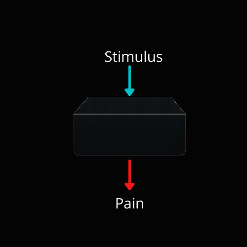
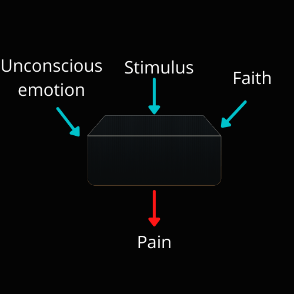

TMS or Tension Myositis Syndrome is prevalent among coders to a level and majority that we cannot truly predict. Most of the abnormalities that we consider in RSI injuries are more highly related to unconscious, repressed emotions. This is the theory of The Mind-Body Syndrome or TMS. The reality and prevalence of TMS is what makes it so important to study as a coder.
If you code enough you can get RSI
Okay, this is not particularly true. There are people who have the genetic resilience to not get elbow wrist and hand RSI. It is fully possible to code like hell and be saved from RSI by your genetics and workout history, yes, workout history, I said that.
You will see on YouTube there are plenty of people that play highly repetitive video games, all day, every day for years.
If you are born with the hands of the gods then yes this could be you. Will it be forever? Not likely. Is it you? Not likely. Because of the potential and danger that RSI poses on your employment, it is vastly important to understand TMS theory and how to overcome it. Reality is, life goes on. If you work in an IT firm, the firm won't pause its work for your injury. If you go to university as a computer science major, the classes will not get easier for you.
Instead, your school grades and work will suffer. That is reality. I'm sorry but it's true but for a pretty good chunk of RSI victims this does not have to be the case.
So, what is TMS?
Tension Myositis Syndrome is the manifestation of benign pain and injury due to unconscious emotion. There are rules and principles which act as a behavioral model to the black box of pain. What do I mean by that? I mean you are rewiring your understanding of the black box of pain. Here is how we typically think of pain.
Firstly, we think there is a stimulus to the body which causes pain, like this:
Instead of this classical model of pain we add some variables:
With these 2 extra variables pain becomes much more predictable. It becomes manageable and able to be deconditioned in our body. The black box is the neuroscience that, honestly we do not need to understand. Just know, this is how the blackbox works. You put in the unconscious emotion, the stimulus of physical activity in reality plus nutrition, and faith that it is benign pain. With this, you will be able to reduce the pain tremendously or almost completely.
How do I know if an injury is TMS or something else?
The primary way to filter and successfully diagnose TMS is to rule out serious illnesses with physicians, rule out acute injury with an orthopedic or physical therapist, then ensure the pain is chronic and not acute. Lastly, check tmswiki.org for a list of common TMS issues. Then, do the TMS work or the work that reduces pain caused by TMS and you will see pain reduction.
If your pain is chronic and not acute, filtered from a physician and/or orthopedic and it significantly reduces or even changes places due to TMS work then you most certainly have TMS. The percentage of people who have TMS is actually very high so, as a coder it is so important.
But Jesse, this is pseudoscience quackery!?
No, it's not. It's just something that you would have to consult a neurologist with who is aware of pain science. But, who has the time and money to do that? I don't. So, I use the blackbox from the father of TMS, Dr. John Sarno. He wrote a book explaining TMS in great detail with solutions and explanations that demystify this blackbox I'm talking about.
In a sense, without fully understanding everything we pay attention to what our doctor says or what a physical therapy book says. But, that is also a blackbox for us who are not formally educated in medicine. I'm telling you, this blackbox works.
But Jesse, this is unchristian!?
Holy Spirit heal me… That is the common cry of the Christian who ignores TMS theory. I have spoken to a number of Christians and most all of them reject TMS as sort of a heathen philosophy. However, there are plenty of Christians who accept the principles of TMS and apply it to their lives. There is no guilt in using something that is proven to work and, at this time, becoming mainstream into healthcare.
Just like it's not a heathen action to get physical therapy, it is not a heathen action to heal yourself using TMS theory. Granted, a lot of TMS theory is difficult to accept in the culture of Christianity but none of the actual work of TMS is a sin or rejected by principle in the Bible. It is the culture of Christianity that denies it and not the Scripture. There is even division within Christianity upon sects which endorse journaling and psychology for healing mental health. These issues are issues of culture and not Scripture.
Additional resources…
The first place to stop is tmswiki.org. The next place to stop is The Mind-Body Prescription book by Dr. John Sarno. From there you can learn TMS theory and prevent yourself from years of chronic pain which happens to the majority of us, just not in the same ways.
Lastly, here is my testimony video on TMS as well as Silent Wolf's testimony:
My TMS testimony:
Silent Wolf's testimony: